library(tidyverse)
library(ggmap) # for ggimage
library(ggfortify) # for autoplot12 Principal Component Analysis
Goal
Introduce Principal Component Analysis (PCA), one of the most popular techniques to perform “dimensionality reduction” of complex data sets. If we see the data as points in a high-dimensional space, we can project the data onto a new set of coordinates such that the first coordinate captures the largest share of the variance in the data, the second coordinates captures the largest share of the remaining variance and so on. In this way, we can project large-dimensional data sets onto low-dimensional spaces and lose the least information about the data.
12.1 Input
We have collected the \(n \times m\) data matrix \(X\) (typically, with \(n \gg m\)), in which the rows are samples and the columns are \(m\) measures on the samples. Each row of this matrix defines a point in the Euclidean space \(\mathbb R^m\), i.e., each point in this space is a potential sample. Naturally, samples with similar measurements are “close” in this space, and samples that are very different are “far”. However, \(m\) can be quite large, and therefore we cannot easily visualize the position of the points. One way to think of PCA is as the best projection of the points in a \(r\)-dimensional space (with \(r \leq m\)), for visualization and clustering.
For example, take the iris data set:
data("iris")
ir <- iris %>% dplyr::select(-Species)
sp <- iris %>% dplyr::select(Species)
pairs(ir, col = sp$Species)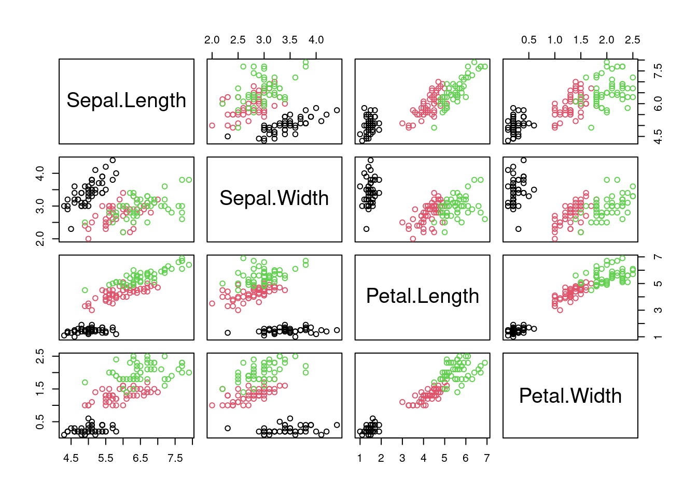
We can separate the clusters better by finding the best projection in 2D:
autoplot(prcomp(ir, center = TRUE),
data = iris,
colour = "Species",
scale = FALSE) +
coord_equal()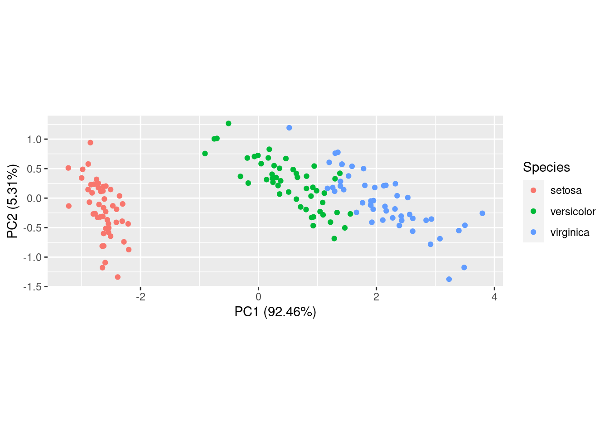
12.2 Singular Value Decomposition
At the hearth of PCA is a particular matrix decomposition (or factorization): we represent the matrix \(X\) as a product of other matrices (or, equivalently, a sum of matrices). In particular, SVD is defined by the equation:
\[ X = U \Sigma V^T \]
\(X\) is a \(n \times m\) matrix, \(U\) is an \(n \times n\) orthogonal, unitary matrix and \(V\) is an \(m \times m\) orthogonal, unitary matrix, and \(\Sigma\) is a \(m \times n\) rectangular, diagonal matrix with non-negative values on the diagonal. If \(V\) is a (real) unitary matrix, then \(VV^T = I_m\) (the \(m \times m\) identity matrix), and if \(U\) is also unitary, then \(UU^T = I_n\). Another way to put this is \(U^{-1} = U^T\).
(Note: this defines the “full” SVD of \(A\); equivalently, one can perform a “thin”, or “reduced” SVD by having \(U\) of dimension \(n \times p\), and \(\Sigma\) and \(V\) of dimension \(p \times p\), where \(p \leq m\) is the rank of \(A\)—by default R returns a “thin” SVD; read the details here).
The values on the diagonal of \(\Sigma\) are the singular values of \(X\), i.e., the nonzero eigenvalues of \(XX^T\) (or \(X^T X\)). In this context, the matrix \(U\) contains the left singular vectors of \(X\) and \(V\) its right singular vectors. Let’s rearrange the rows/cols of \(\Sigma\), \(U\) and \(V\) such that we have the singular values in decreasing order: \(\text{diag}(\Sigma) = (\sigma_1, \sigma_2, \ldots, \sigma_m)\).
Through SVD, the matrix \(X\) can be seen as a sum of \(m\) matrices:
\[ X = \sum_{i = 1}^m U_i \Sigma_{ii} V_i^T = X_1 + X_2 + X_3 + \ldots \]
Where \(U_i\) is the \(i\)th column of \(U\). Most importantly, you can prove that at each step (\(r\)), you are computing the “best” approximation of \(X\) as a sum of \(r\) rank-1 matrices. I.e., for each \(r\) we have that \(\| X - (X_1 + X_2 + \ldots + X_r) \|\) is as small as possible (Eckart–Young–Mirsky theorem).
Let’s look at a concrete example. A monochromatic image can be represented as a matrix where the entries are pixels taking values in (for example, using 8 bits) \(0, 1, \ldots, 255\):
stefano <- as.matrix(read.csv("data/stefano.txt"))
# invert y axis and transpose for visualization
stefano <- t(stefano[,ncol(stefano):1])
# rescale values to suppress warning from ggimage
stefano <- stefano / max(stefano)
ggimage(stefano)Now let’s perform SVD, and show that indeed we have factorized the image:
s_svd <- svd(stefano)
U <- s_svd$u
V <- s_svd$v
Sigma <- diag(s_svd$d)
# this should be equal to the original matrix
stefano_2 <- U %*% Sigma %*% t(V)
# let's plot the difference
ggimage(round(stefano - stefano_2, 10))Now we can visualize the approximation we’re making when we take only the first few singular values. We’re going to plot \(X_k\) (on the left), and \(\sum_{i=1}^k X_i\) (on the right). Even with only a few iterations (7, out of 255) we obtain a recognizable image:
r <- 7
Xdec <- array(0, c(dim(stefano), r))
Xsum <- array(0, c(dim(stefano), r))
# store the first matrix
Xdec[,,1] <- (U[,1] %*% t(V[,1])) * Sigma[1,1]
# the first term in the sum is the matrix itself
Xsum[,,1] <- Xdec[,,1]
# store the other rank one matrices, along with the partial sum
for (i in 2:r){
Xdec[,,i] <- (U[,i] %*% t(V[,i])) * Sigma[i,i]
Xsum[,,i] <- Xsum[,,i - 1] + Xdec[,,i]
}
# now plot all matrices and their sum
plots <- list()
for (i in 1:r){
plots[[length(plots) + 1]] <- ggimage(Xdec[,,i])
plots[[length(plots) + 1]] <- ggimage(Xsum[,,i])
}
gridExtra::grid.arrange(grobs = plots, ncol = 2)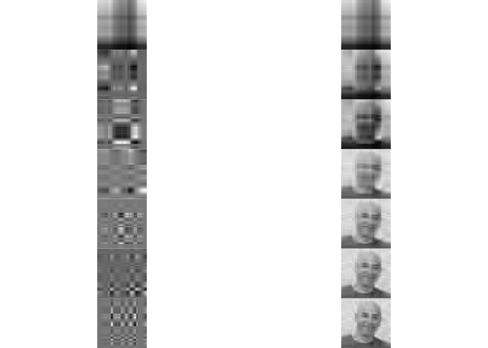
12.3 SVD and PCA
Let’s go back to our data matrix \(X\), and its representation as \(n\) points (the samples) in \(m\) dimensions (the measurements). For the moment, consider the case in which each column of \(X\) sums to zero (i.e., for each measurement, we have removed the mean—this is called “centering”). We would like to represent the data as best as possible in few dimensions, such that a) the axes are orthogonal; b) the axes are aligned with the principal sources of variation in the data. More precisely, PCA is an orthogonal linear transformation that transforms the data to a new coordinate system such that the direction of greatest variance of the data is aligned with the first coordinate, the second greatest with the second coordinate, and so on.
For example, let’s take the Petal.Lenght and Petal.Width in iris:
X <- iris %>% dplyr::select(Petal.Length, Petal.Width) %>% as.matrix()
X <- scale(X, center = TRUE, scale = FALSE) # remove mean
colors <- iris$Species
plot(X, col = colors)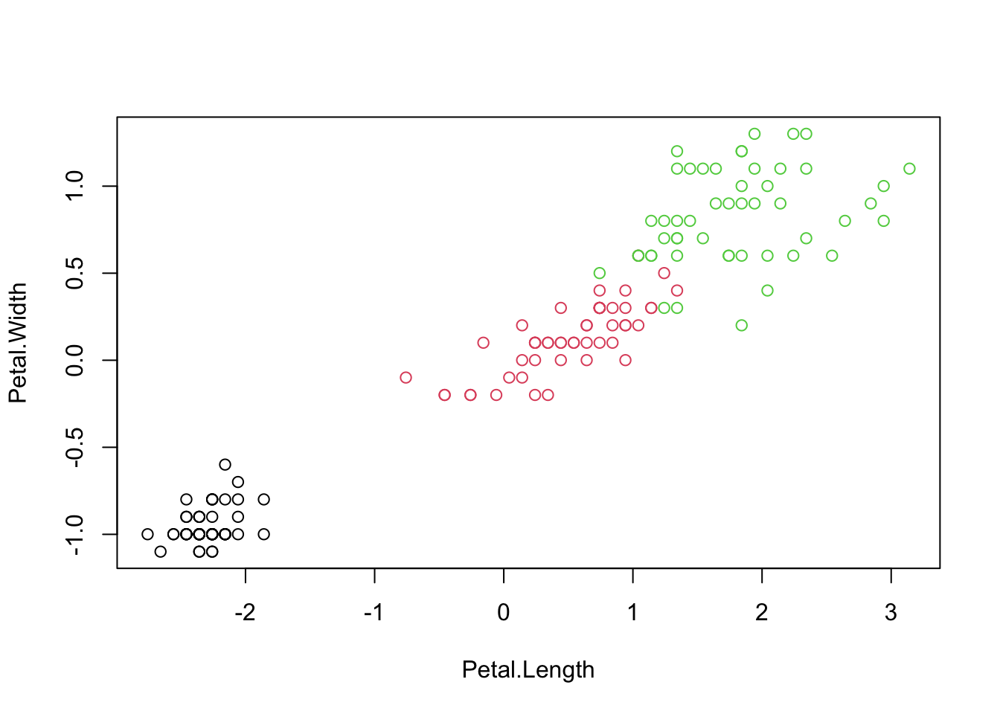
You can see that now the points are centered at (0,0).
In practice, we want to produce a new “data matrix” \(Y\):
\[ Y = XW \]
where \(W\) is an appropriate change of basis, transforming the data such that the directions of main variation are exposed. While we could choose any \(m \times m\) matrix, we want a) \(W\) to be orthogonal (i.e., a “rotation” of the data), and b) all columns of \(W\) to be unit vectors (no stretching of the data).
The new columns (i.e., the transformed “measurements”) \(Y_i\) can be written as:
\[ Y_{i} = X W_i \]
Where \(Y_i\) is the ith column of \(Y\) and \(W_i\) the ith column on \(W\). Let’s start with the first column \(Y_1\): we want to choose \(W_1\) such that the variance of \(Y_i\) is maximized. Because the mean of each column of \(X\) is zero, then also the mean of \(Y_i\) is zero. Thus, the variance is simply \(\frac{1}{n-1}\sum_{j =1}^{n} Y_{ij}^2 =\frac{1}{n-1} \|Y_i\|\). We can write this is matrix form:
\[\frac{1}{n-1}\|Y_i\| = \frac{1}{n-1}\|XW_i \| = \frac{1}{n-1} W_i^TX^T X W_i\]
Note that \(S = \frac{1}{n-1} X^T X\) is the \(m \times m\) sample covariance matrix of \(X\). Because \(\|W_i\| = 1\), we can rewrite this as:
\[ \frac{1}{n}\|Y_i\| = \frac{W_i^T S W_i}{W_i^T W_i} \]
Which is maximized (over \(W_i\)) when \(W_i\) is the eigenvector of \(S\) associated with the largest eigenvalue (see the Rayleigh quotient), in which case:
\[ \frac{1}{n-1}\|Y_i\| = \frac{W_i^T S W_i}{W_i^T W_i} = \lambda_1 \]
Therefore, the first column of \(Y\) is given by the projection of the data on the first eigenvector of \(S\). The variance captured by this first axis is given by the largest eigenvalue of \(S\). To find the other columns of \(Y\), you can subtract from \(X\) the matrix \(Y_1 W_1^T\) and repeat.
Note that the first axis captures \(\lambda_1 / \sum_{i = 1}^m \lambda_i\) of the total variance in \(X\). This is typically reported in PCA as the “loadings” of the various components.
# build sample covariance matrix
S <- (1 / (nrow(X) - 1)) * t(X) %*% X
# compute eigenvalues and eigenvectors
eS <- eigen(S, symmetric = TRUE)
# W is the matrix of eigenvectors
W <- eS$vectors
# check
Y <- X %*% W
plot(Y, col = colors)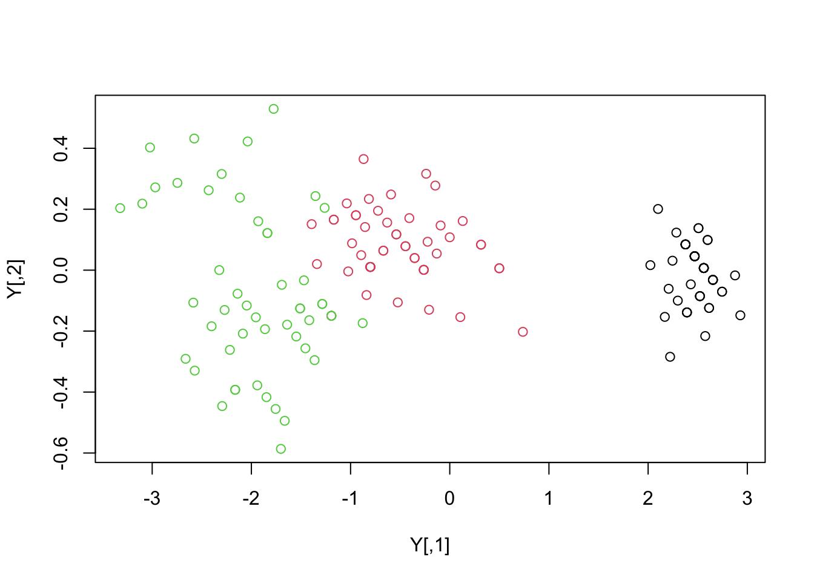
eS$values[1] 3.66123805 0.03604607apply(Y, 2, var)[1] 3.66123805 0.03604607Therefore, PCA amounts to simply taking the eigenvectors of \(S\) ordered by the corresponding eigenvalues. We can use the SVD to accomplish this task efficiently:
\[ X = U \Sigma V^T \]
\[ \begin{aligned} (n-1) S = X^T X &= (V \Sigma^T U^T) (U \Sigma V^T)\\ &= V \Sigma^T \Sigma V^T\\ &= V \widetilde{\Sigma}^2 V^T \end{aligned} \]
where \(\widetilde{\Sigma}^2 = \Sigma^T \Sigma\) (or, equivalently the square of the square version of \(\Sigma\)). But contrasting \(S = W \Lambda W^T\) and \(S = V (\widetilde{\Sigma}^2 / (m-1))V^T\) we see that \(V = W\). Finally, we have:
\[ Y = X W = U \Sigma V^T V = U\Sigma \]
Therefore, we can perform PCA efficiently by decomposing \(X\) using SVD.
12.3.1 PCA in R—from scratch
dt <- read_csv("data/handwritten_digits.csv") %>%
arrange(id, x, y)Rows: 123392 Columns: 6
── Column specification ────────────────────────────────────────────────────────
Delimiter: ","
dbl (6): id, label, pixel, value, x, y
ℹ Use `spec()` to retrieve the full column specification for this data.
ℹ Specify the column types or set `show_col_types = FALSE` to quiet this message.head(dt)# A tibble: 6 × 6
id label pixel value x y
<dbl> <dbl> <dbl> <dbl> <dbl> <dbl>
1 1 0 0 0 1 1
2 1 0 16 0 1 2
3 1 0 32 0 1 3
4 1 0 48 0 1 4
5 1 0 64 0 1 5
6 1 0 80 0 1 6# make into a data matrix with pixels as cols
dt_wide <- pivot_wider(dt %>% dplyr::select(-x, -y),
names_from = pixel,
values_from = value)
X <- (as.matrix(dt_wide %>% dplyr::select(-id, -label)))
# make col means = 0
Xs <- scale(X, center = TRUE, scale = FALSE)
# compute SVD
X_svd <- svd(Xs)
# Y = US is the transformed data
Y <- X_svd$u %*% diag(X_svd$d)PCA_1 <- dt_wide %>%
dplyr::select(id, label) %>%
mutate(label = as.character(label)) %>%
add_column(PC1 = Y[,1], PC2 = Y[,2])
ggplot(PCA_1) +
aes(x = PC1, y = PC2, label = id, group = label, colour = label) +
geom_text()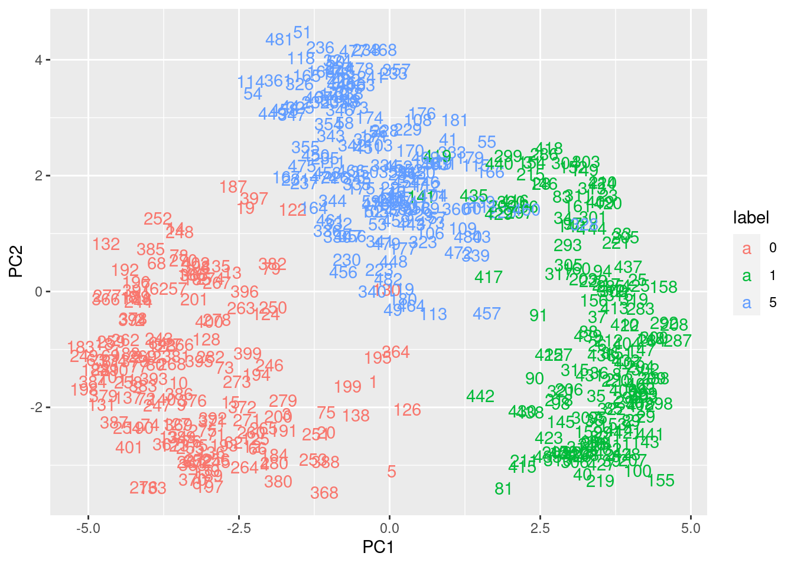
Pretty good! Let’s see some of the poorly classified points:
# This should be a 0
ggimage(matrix(X[122,], 16, 16, byrow = FALSE), fullpage = FALSE)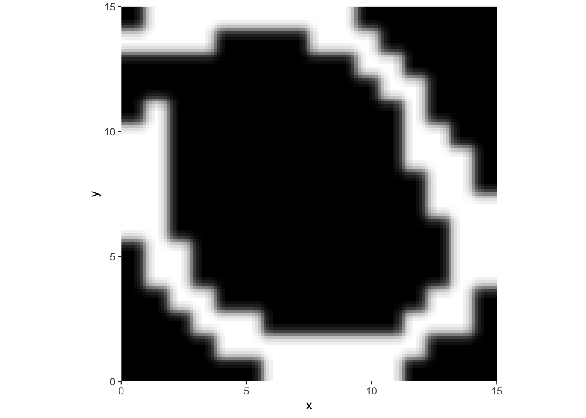
# This should be a 1
ggimage(matrix(X[141,], 16, 16, byrow = FALSE), fullpage = FALSE)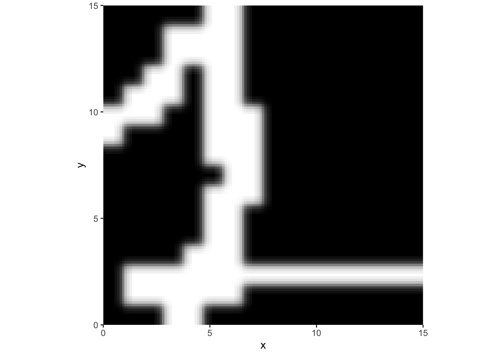
# This should be a 5
ggimage(matrix(X[322,], 16, 16, byrow = FALSE), fullpage = FALSE)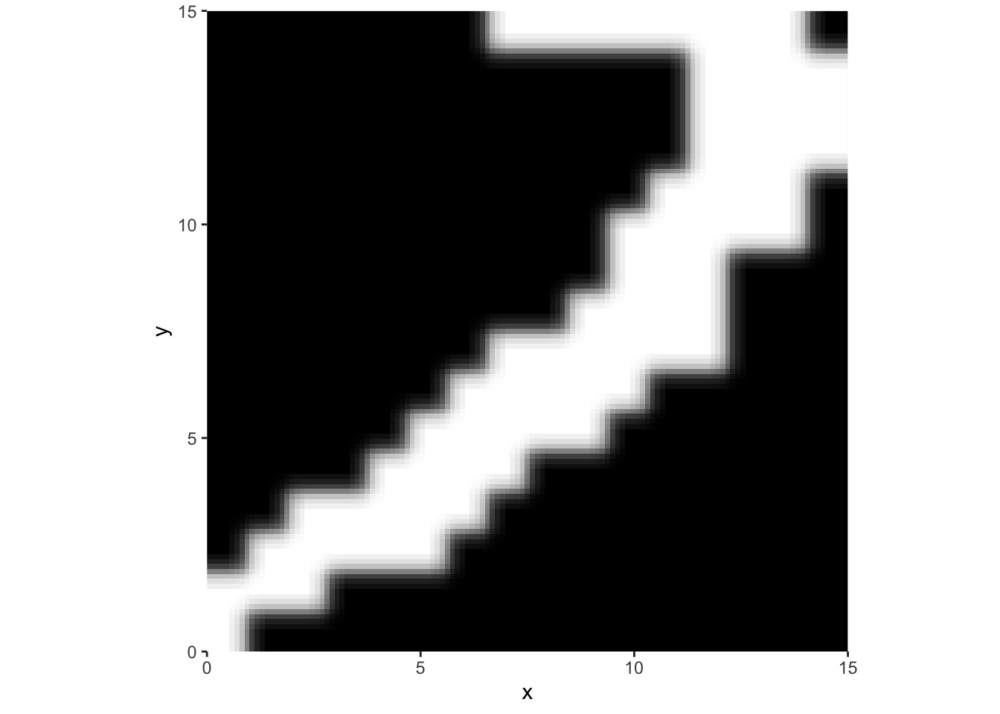
You can also scale the variables turning the sample covariance matrix \(S\) into a correlation matrix (this is useful when the variance of different measurements varies substantially).
12.3.2 PCA in R — the easy way
library(ggfortify)
# for prcomp, you need only numeric data
X <- dt_wide %>% dplyr::select(-id, -label)
PCA_3 <- prcomp(X)
autoplot(PCA_3,
data = dt_wide %>% mutate(label = as.character(label)),
colour = "label",
frame = TRUE, frame.type = 'norm')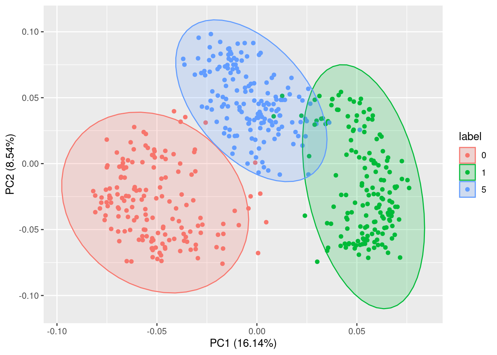
12.4 Multidimensional scaling
The input is the matrix of dissimilarities \(D\), potentially representing distances \(d_{ij} = d(x_i, x_j)\). A distance function is “metric” if:
- \(d(x_i, x_j) \geq 0\) (non-negativity)
- \(d(x_i, x_j) = 0\) only if \(x_i = x_j\) (identity)
- \(d(x_i, x_j) = d(x_j, x_i)\) (symmetry)
- \(d(x_i, x_k) \leq d(x_i, x_j) + d(x_j, x_k)\) (triangle inequality)
Given a set of dissimilarities, we can therefore ask whether they are distances, and particularly whether they represent Euclidean distances.
12.4.1 Goal of MDS
Given the \(n \times n\) matrix \(D\), find a set of coordinates \(x_i, \ldots x_n \in \mathbb R^p\), such that \(d_{ij} \approx \lVert x_i - x_j \rVert_2\) (as close as possible). The operator \(\lVert \cdot \rVert_2\) is the Euclidean norm, measuring Euclidean distance.
As such, if we can find a perfect solution, then the dissimilarities can be mapped into Euclidean distances in a \(k\)-dimensional space.
12.4.2 Classic MDS
Suppose that the elements of \(D\) measure Euclidean distances between \(n\) points, each of which has \(k\) coordinates:
\[ X = \begin{bmatrix} x_{11} & x_{12} & \dots & x_{1k} \\ x_{21} & x_{22} & \dots & x_{2k} \\ \vdots & \vdots & \ddots & \vdots \\ x_{n1} & x_{n2} & \dots & x_{nk} \end{bmatrix} \] We consider the centered coordinates:
\[ \sum_i x_{ij} = 0 \] And the matrix \(B = X X^t\), whose coefficients are \(B_{ij} = \sum_k x_{ik} x_{jk}\). We can write the square of the distance between point \(i\) and \(j\) as:
\[ d_{ij}^2 = \sum_k (x_{ik} - x_{jk})^2 = \sum_k x_{ik}^2 + \sum_k x_{jk}^2 -2 \sum_k x_{ik} x_{jk} = B_{ii} + B_{jj} - 2 B_{ij}\]
Note that, because of the centering:
\[ \sum_i B_{ij} = \sum_i \sum_k x_{ik} x_{jk} = \sum_k x_{jk} \sum_i x_{ik} = 0 \]
Now we compute:
\[ \sum_i d_{ij}^2 = \sum_i (B_{ii} + B_{jj} - 2 B_{ij}) = \sum_i B_{ii} + \sum_i B_{jj} - 2 \sum_i B_{ij} = \text{Tr}(B) + n B_{jj} \]
Similarly (distances are symmetric):
\[ \sum_j d_{ij}^2 = \text{Tr}(B) + n B_{ii} \]
And, finally:
\[ \sum_i \sum_j d_{ij}^2 = 2 n \text{Tr}(B) \]
From these three equations, we obtain:
\[ B_{ii} = \frac{\sum_j d_{ij}^2}{n} - \frac{\sum_i \sum_j d_{ij}^2 }{2 n^2} \]
and
\[ B_{jj} = \frac{\sum_i d_{ij}^2}{n} - \frac{\sum_i \sum_j d_{ij}^2 }{2 n^2} \]
Therefore:
\[ B_{ij} = -\frac{1}{2}(d_{ij}^2 - B_{ii} - B_{jj}) = -\frac{1}{2}\left(d_{ij}^2 - \frac{\sum_i d_{ij}^2}{n} - \frac{\sum_j d_{ij}^2}{n} + \frac{\sum_i \sum_j d_{ij}^2 }{n^2} \right) \]
With some algebra, one can show that this is equivalent to:
\[B = -\frac{1}{2} C D^{(2)} C\]
Where \(D^{(2)}\) is the matrix of squared distances, and \(C\) is the centering matrix \(C = 1 - \frac{1}{n}\mathcal O\) (and \(\mathcal O\) is the matrix of all ones). Thus, we can obtain \(B\) directly from the distance matrix. Once we’ve done this, \(X\) can be found by taking the eigenvalue decomposition:
\[ B = X X^t = Q \Lambda Q^t \]
(where \(Q\) is the matrix of eigenvectors of \(B\), and \(\Lambda\) a diagonal matrix of the eigenvalues of \(B\)). Therefore:
\[ X = Q \Lambda^{\frac{1}{2}}\]
For example, let’s look at the driving distance in km between cities in the US:
# read distances US
usa <- read_csv("data/dist_US.csv")Rows: 265356 Columns: 3
── Column specification ────────────────────────────────────────────────────────
Delimiter: ","
chr (2): from, to
dbl (1): dist
ℹ Use `spec()` to retrieve the full column specification for this data.
ℹ Specify the column types or set `show_col_types = FALSE` to quiet this message.# make into a matrix of distances
M <- usa %>% pivot_wider(names_from = to, values_from = `dist`) %>%
dplyr::select(-from) %>%
as.matrix()
M[is.na(M)] <- 0
rownames(M) <- colnames(M)
# make symmetric
M <- M + t(M)
M[1:2, 1:2] Abilene, TX, United States
Abilene, TX, United States 0.00
Ahwatukee Foothills, AZ, United States 1487.19
Ahwatukee Foothills, AZ, United States
Abilene, TX, United States 1487.19
Ahwatukee Foothills, AZ, United States 0.00And perform classic MDS using two dimensions:
mds_fit <- cmdscale(M, k = 2) # k is the dimension of the embedding
mds_fit <- tibble(id = rownames(M),
x = mds_fit[,1], y = mds_fit[,2])
pl <- mds_fit %>%
ggplot() +
aes(x = x, y = y) +
geom_point() +
xlim(2 * range(mds_fit$x))
show(pl)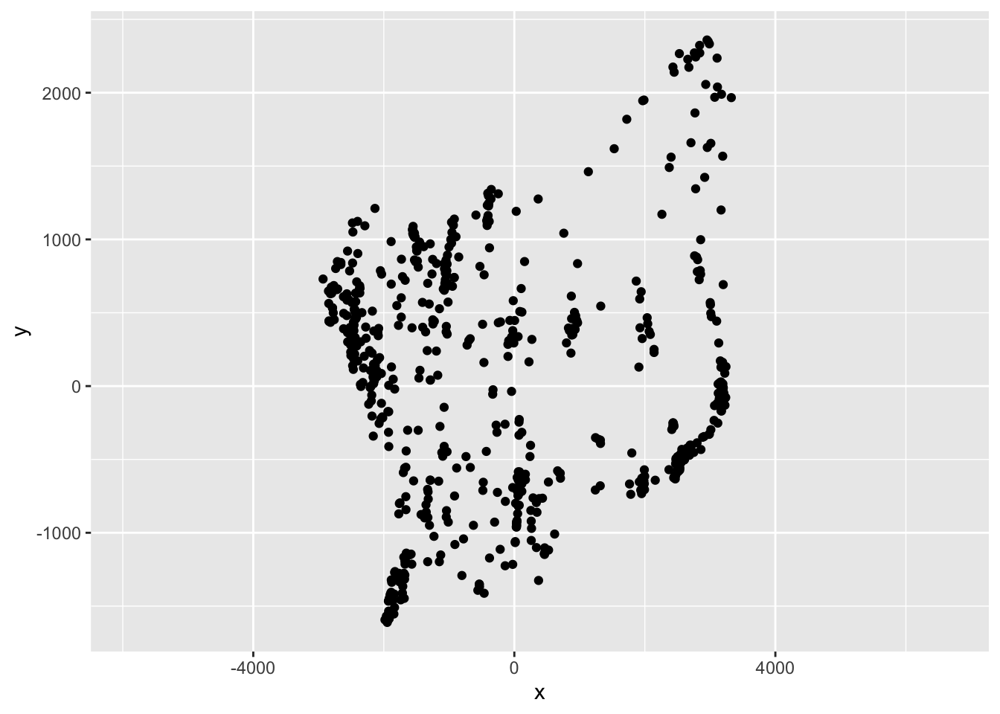
# highlight some major cities
hh <- c(122, 175, 177, 373, 408, 445, 572, 596, 691)
mds_highlight <- mds_fit %>% slice(hh)
show(pl + geom_point(data = mds_highlight, aes(colour = rownames(M)[hh])))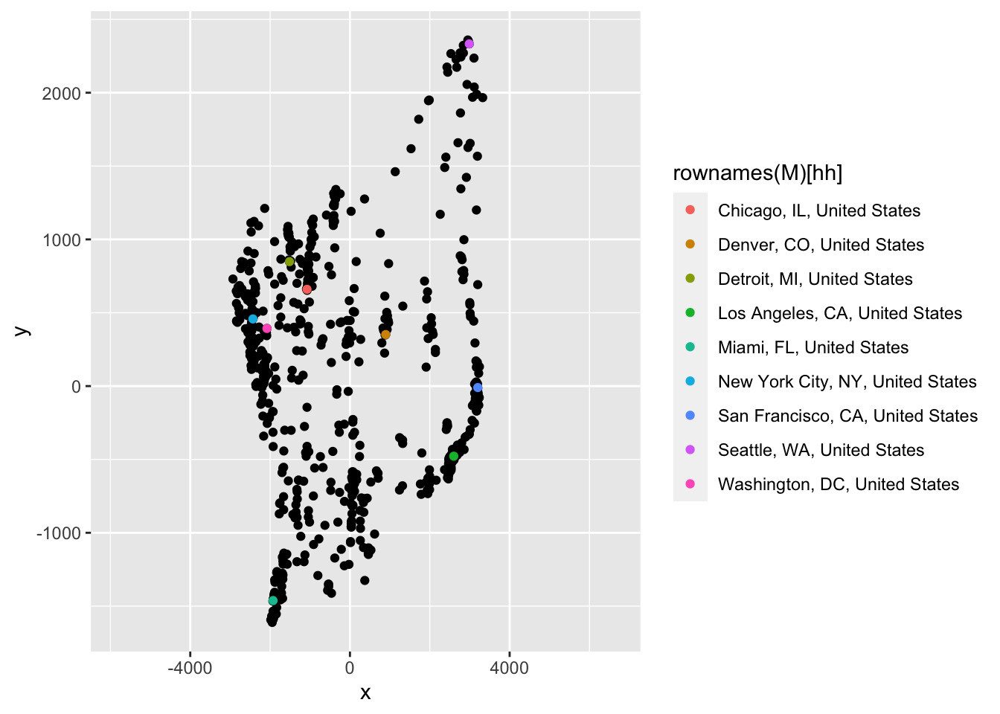
12.5 Readings
SVD is the most important decomposition, but several interesting variations have been proposed for data science. Read this very cool paper on face recognition using Non-negative Matrix Factorization.
12.5.1 Exercise: PCA sommelier
The file Wine.csv contains several measures made on 178 wines from Piedmont, produced using three different grapes (column Grape, with 1 = Barolo, 2 = Grignolino, 3 = Barbera). Use the 13 measured variables (i.e., all but Grape) to perform a PCA. First, do it “the hard way” using SVD, and then, calling the prcomp function. Can you recover the right classification of grapes?